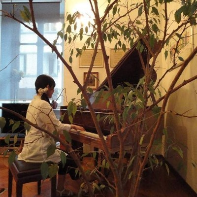

Welcome to
SHISHIMARU'S PORTFOLIO
ABOUT

Profile
名前：shishimaru
（白石真美）
出身地：大阪府
ポートフォリオをご覧いただきありがとうございます！
水泳指導員として働きながらWeb制作を学んでいます。
趣味は音楽、特にピアノで、エレクトーンやヴァイオリンも
時々弾いて楽しんでいます♪
また、イタリアのヴェネツィアへの憧れからイタリア語を勉強し、
大学時代にトリノへ1年間留学もしていました。
※shishimaru（獅子丸）は学生時代に働いていた
イタリアンレストランでつけてもらった愛称です。
気軽に"しし"や"獅子丸"と呼んでもらえたら嬉しいです♬
Skill
現在学習中...HTML, CSS
今後学習予定...JavaScript, jQuery, Dart Sass, WordPress, etc
CONTACT
お問い合わせは、
Twitter, Facebook, またはメールでお願いいたします。
lumis.eterne.gondola@gmail.com